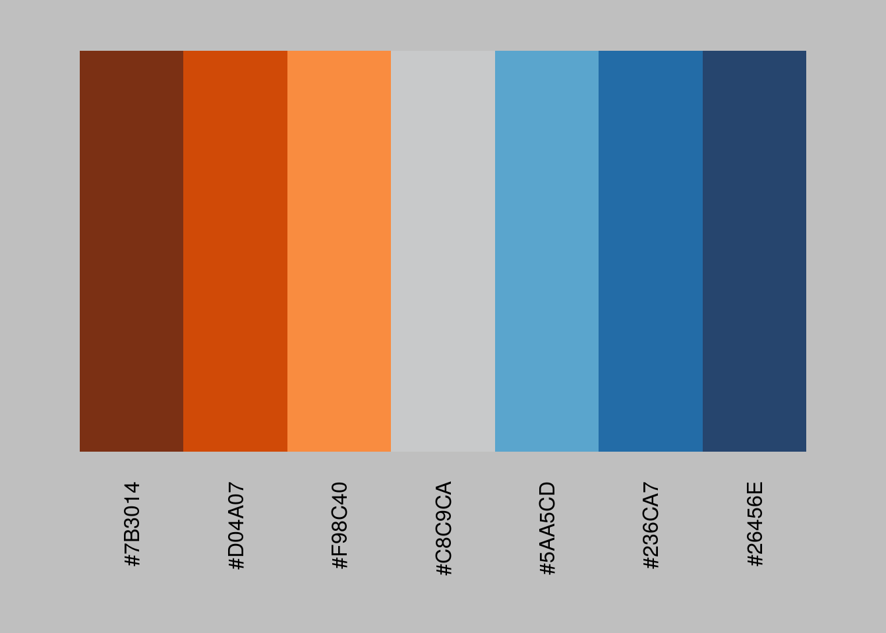
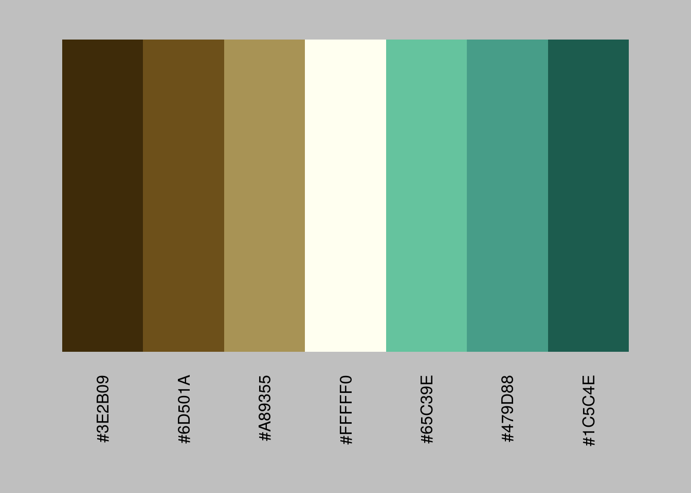
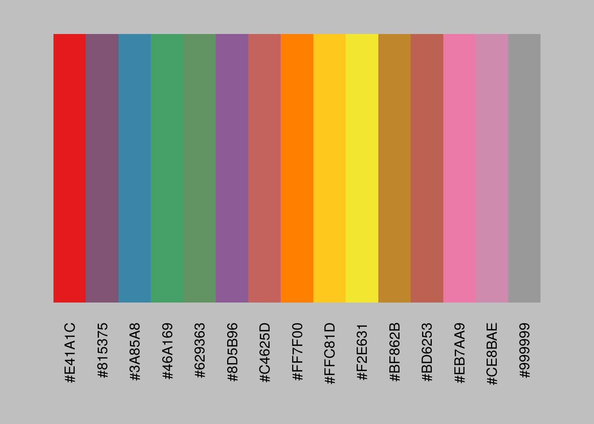
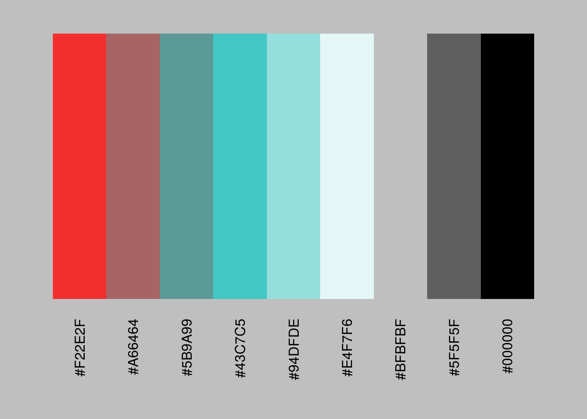
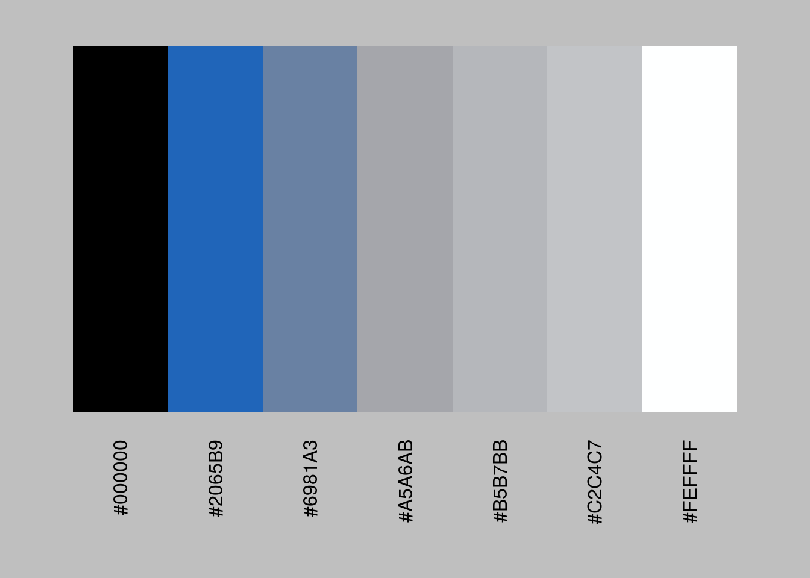
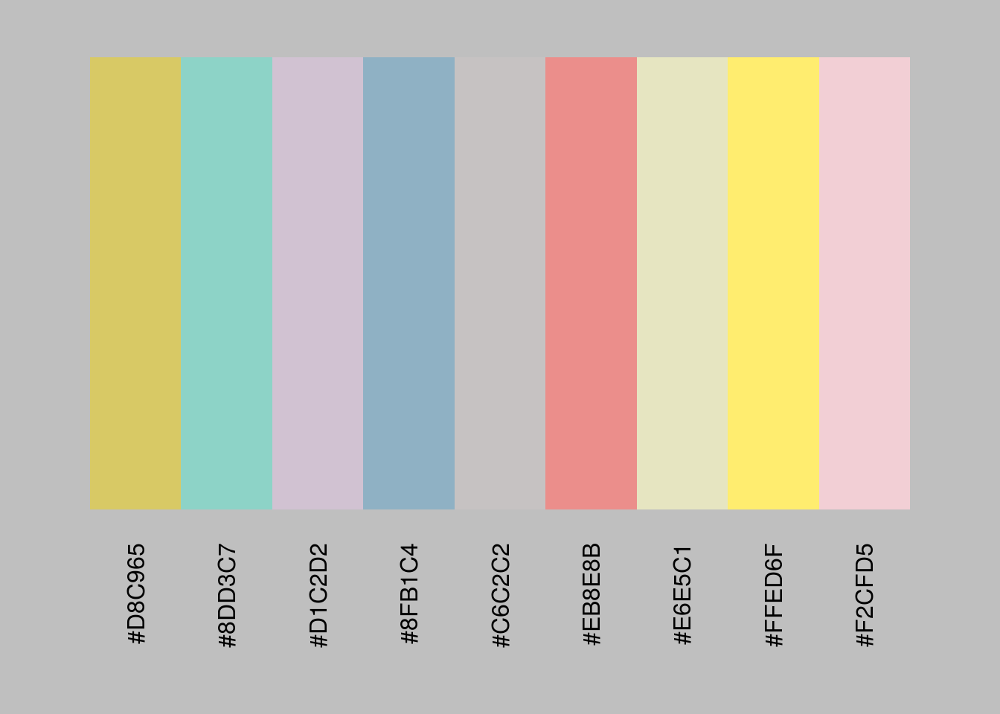

colourgen
Install
Install using devtools::install_github("onehundredpercenttexan/colourgen")
Basic Functionality
The colourgen package provides a single, consistent interface for generating colour palettes in R. The colourgen::make_palette function returns a list object containing a base graphics plot preview and palette character vector which make generating, inspecting and fine-tuning color palettes a breeze.
The colour parameter will accept any base R color function, RColorBrewer named palette, viridis named palette or variable-length character vector of any combination of base grDevices::colours and hexadecimal colors.
There aren’t enough good diverging palettes so colourgen::make_palette will default some right out-of-the box.
colourgen::make_palette()
## Empty or Unknown Colour(s)...
## Defaulting to Tableau-esque
## Orange-Blue Diverging Palette
my_palette <- colourgen::make_palette(default = FALSE)## Empty or Unknown Colour(s)...
## Defaulting to Stephen Few-esque
## Earth-Emerald Diverging Palette
If you like tweaking your color palettes, you can easily do that. Let’s just simply replace the middle color with “ivory” and call colourgen::make_palette again to check the new results.
my_palette$palette## [1] "#3E2B09" "#6D501A" "#A89355" "#C8C9CA" "#65C39E" "#479D88" "#1C5C4E"my_palette$palette[4] <- "ivory"
my_palette_redo <- colourgen::make_palette(colour = my_palette$palette)
No Limitations
If you want to interpolate a palette that normally has a hard limit; don’t worry, colourgen was created for this very reason and wil return as many colors as you need for your factor levels! NOTE:, you should still be careful and use common sense ;)
colourgen::make_palette(colour = "set1", n = 15)

COLOURLovers API
colourgen also supports the COLOURLovers palette API. Just supply a valid paletteID and you can interpolate over that palette ’til your heart’s content.
colourgen::make_palette(colour = 3914747, n = 9)

Other Options
colourgen will let you shuffle or reverse the returned palette if you need to.
colourgen::make_palette(colour = "set3", n = 9, shuffle = TRUE)

colourgen::make_palette(colour = "Purples", n = 15, reverse = TRUE)

Summary
colourgen aims to be a simple, but effective solution to the common task of crafting and previewing color palettes from many diverse sources. I hope you find it useful and also feel free to make pull/merge requests for bugs and improvements or adding new features if you like.